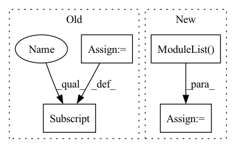

Pattern ID :315

Before Change
super().__init__()
self._submodules_ordered_dict = OrderedDict()
for index in range(message_passing_steps):
self._submodules_ordered_dict[str(index)] = GraphNetBlock(model_fn=make_mlp, output_size=output_size,
message_passing_aggregator=message_passing_aggregator,
attention=attention)
self.submodules = nn.Sequential(self._submodules_ordered_dict)
After Change
stochastic_message_passing_used=False):
super().__init__()
self.stochastic_message_passing_used = stochastic_message_passing_used
self.graphnet_blocks = nn.ModuleList()
for index in range(message_passing_steps):
self.graphnet_blocks.append(GraphNetBlock(model_fn=make_mlp, output_size=output_size,
message_passing_aggregator=message_passing_aggregator,
attention=attention))
In pattern: SUPERPATTERN
Frequency: 3
Non-data size: 4
Instances
Fragment ID: 1183746
Project Name: wwmark/meshgraphnets
Commit Name: e4e3108cc75391e9ec27d848ef92f94334e0915b
Time: 2021-11-07
Author: ruoheng.ma@gmail.com
File Name: encode_process_decode_ripple.py
M Class Name: Processor
N Class Name: Processor
M Method Name: __init__(7)
N Method Name: __init__(6)
M Parent Class: nn.Module
N Parent Class: nn.Module
M File Name: encode_process_decode_ripple.py
N File Name: encode_process_decode_ripple.py
M Start Line: 323
M End Line: 328
N Start Line: 323
N End Line: 330
Fragment ID: 1183747
Project Name: wwmark/meshgraphnets
Commit Name: 2e65d2b0e36033a5a2a0ddcb73d7601635f223ba
Time: 2021-11-21
Author: ruoheng.ma@gmail.com
File Name: encode_process_decode.py
M Class Name: Processor
N Class Name: Processor
M Method Name: __init__(7)
N Method Name: __init__(5)
M Parent Class: nn.Module
N Parent Class: nn.Module
M File Name: encode_process_decode.py
N File Name: encode_process_decode.py
M Start Line: 171
M End Line: 174
N Start Line: 222
N End Line: 230
Fragment ID: 1183749
Project Name: alexandra-chron/hierarchical-domain-adaptation
Commit Name: d7af68e8dab4cedbe21346e2bf8ef39853a6194f
Time: 2021-07-29
Author: alexandra.xron@gmail.com
File Name: models/modeling_gpt2.py
M Class Name: GPT2Block
N Class Name: GPT2Block
M Method Name: __init__(2)
N Method Name: __init__(2)
M Parent Class: nn.Module
N Parent Class: nn.Module
M File Name: models/modeling_gpt2.py
N File Name: models/modeling_gpt2.py
M Start Line: 325
M End Line: 338
N Start Line: 324
N End Line: 340